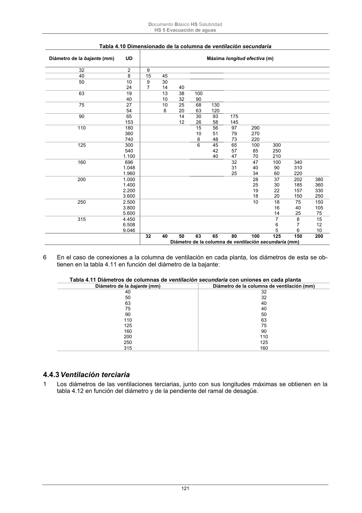

DB-HS Salubridad · edición 2022-06-14 · capa oficial
Documento DB-HS-oficial · SHA-256 del PDF 68df3caacc95f71aee2ec1ba7b2c65ae66155c21e3a8785521b8fdd4fd640d3b
Copia fiel del PDF fuente · Fuente oficial
Ficha de la disposición en la fuente oficial
Formatos: JSON del segmento · Markdown
4.4.3 Ventilación terciaria 1 Los diámetros de las ventilaciones terciarias, junto con sus longitudes máximas se obtienen en la tabla 4.12 en función del diámetro y de la pendiente del ramal de desagüe. Documento Básico HS Salubridad HS 5 Evacuación de aguas 122 Tabla 4.12 Diámetros y longitudes máximas de la ventilación terciaria Diámetro del ramal de desagüe (mm) Pendiente del ramal de desagüe (%) Máxima longitud del ramal de ventilación (m) 32 2 >300 40 2 >300 >300 50 1 2 >300 >300 >300 >300 >300 >300 65 1 2 300 250 >300 >300 >300 >300 >300 >300 80 1 2 200 100 300 215 >300 >300 >300 >300 >300 >300 100 1 2 40 20 110 44 300 180 >300 >300 >300 >300 125 1 2 28 15 107 48 255 125 >300 >300 150 1 2 37 18 96 47 >300 >300 32 40 50 65 80 Diámetro del ramal de ventilación (mm)
